For my CS180 Final Project, I worked on implementing a light field camera! It was pretty cool and I learned a lot! Interesting how you can shift images slightly and do a few relatively simple operations to change the focus :)
The first part of the project involved depth refocusing. Using images from the Stanford Light Field Archive, I worked with 289 images of a chessboard and a flower taken from different (x, y) positions. The goal was to adjust focus to emphasize different parts of the image.
The process began by preprocessing the images to extract their respective (x, y) positions.
Next, I calculated the difference between each (x, y) coordinate and the center position (8, 8).
Using the scipy.ndimage.shift function, I shifted each image by c * (x - 8) and -1 * c * (y - 8),
where c represents the depth. Adjusting c allowed me to focus on different depths in the scene.
Finally, I combined all the shifted images into a normalized average to produce the final output.
Depth focus simulated for c values ranging from 0 to 3 in steps of 0.2.
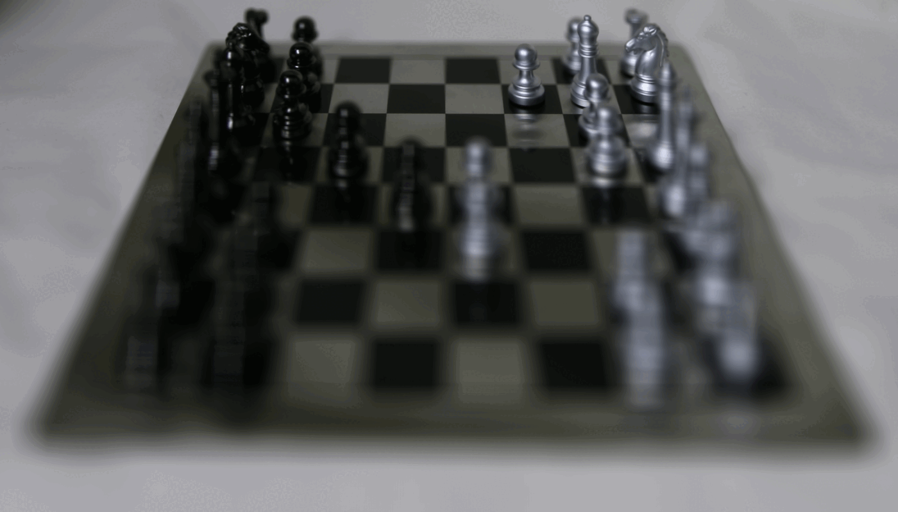
Depth focus simulated for c values ranging from 0 to 2 in steps of 0.2.
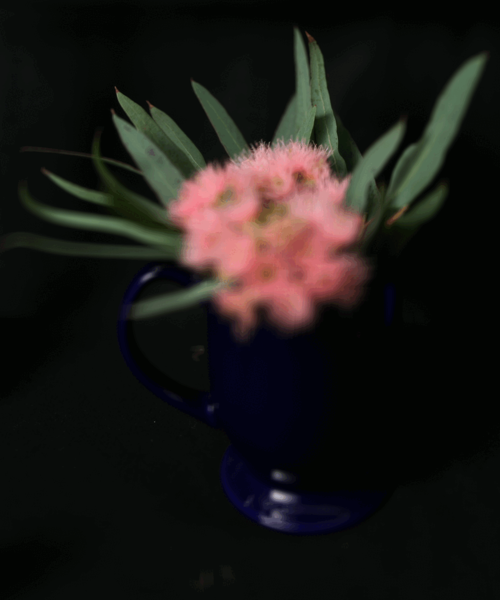
The second part of the project involved simulating aperture adjustment. Aperture controls the area of focus, allowing us to mimic the effect of increasing or decreasing aperture size. By selectively including images within a specific distance from the center, I could adjust the level of blur in the final output.
The implementation involved excluding images where the absolute difference between their (x, y) coordinates and the center (8, 8) exceeded the aperture threshold. The remaining images were combined into a normalized average. Below, you can see the results for varying aperture sizes.
Simulated aperture size ranging from 0 to 10 in steps of 1, with c = 1.5.
Simulated aperture size ranging from 0 to 5 in steps of 1, with c = 1.5.

The first part of the project involved depth refocusing. Using images from the Stanford Light Field Archive, I worked with 289 images of a chessboard and a flower taken from different (x, y) positions. The goal was to adjust focus to emphasize different parts of the image.
The process began by preprocessing the images to extract their respective (x, y) positions.
Next, I calculated the difference between each (x, y) coordinate and the center position (8, 8).
Using the scipy.ndimage.shift function, I shifted each image by c * (x - 8) and -1 * c * (y - 8),
where c represents the depth. Adjusting c allowed me to focus on different depths in the scene.
Finally, I combined all the shifted images into a normalized average to produce the final output.
Depth focus simulated for c values ranging from 0 to 3 in steps of 0.2.
Depth focus simulated for c values ranging from 0 to 2 in steps of 0.2.
The second part of the project involved simulating aperture adjustment. Aperture controls the area of focus, allowing us to mimic the effect of increasing or decreasing aperture size. By selectively including images within a specific distance from the center, I could adjust the level of blur in the final output.
The implementation involved excluding images where the absolute difference between their (x, y) coordinates and the center (8, 8) exceeded the aperture threshold. The remaining images were combined into a normalized average. Below, you can see the results for varying aperture sizes.
Simulated aperture size ranging from 0 to 10 in steps of 1, with c = 1.5.
Simulated aperture size ranging from 0 to 5 in steps of 1, with c = 1.5.
Depth focus simulated for c values ranging from 0 to 3 in steps of 0.5. Since it is hard to do image offsets perfectly with a human hand, my output is blurry and does not look very clear.
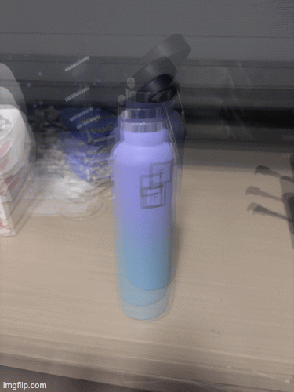
For the second part of my CS180 final project, I explored High Dynamic Range (HDR) imaging. This technique enables capturing and processing a wider range of light and dark details than standard photography. It was fascinating to see how mathematical models and algorithms can help bring out vibrant details in scenes that would otherwise appear too bright or too dark.
The HDR process begins with capturing a series of base images of the same scene, each taken at different exposure levels. These images collectively provide a complete range of light information—some focusing on brighter regions and others emphasizing darker regions. Combining these images enables us to reconstruct the full dynamic range of the scene. Below is an example sequence of base images used in this project:
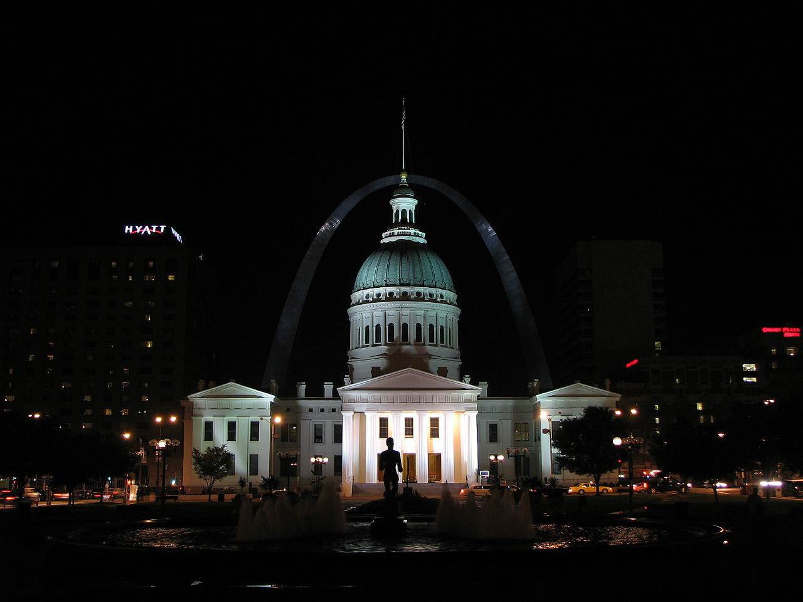
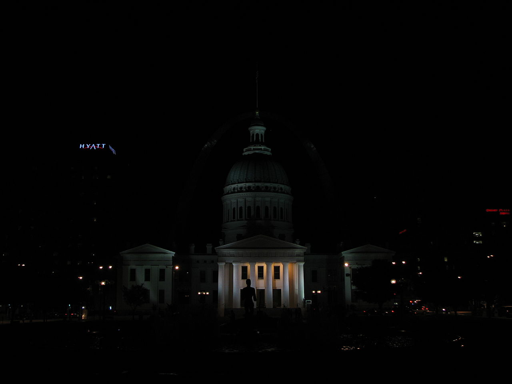
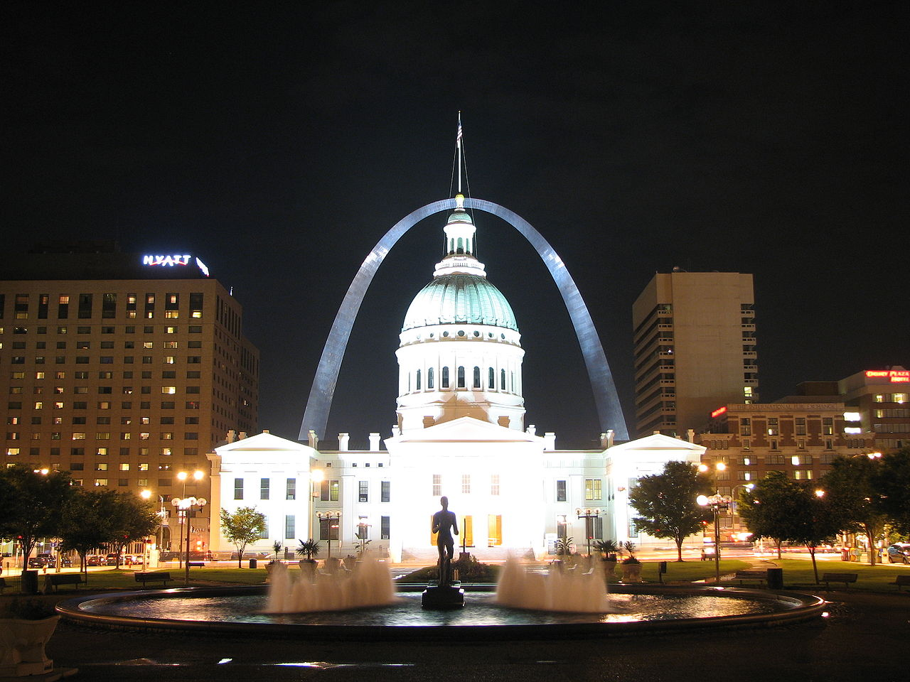
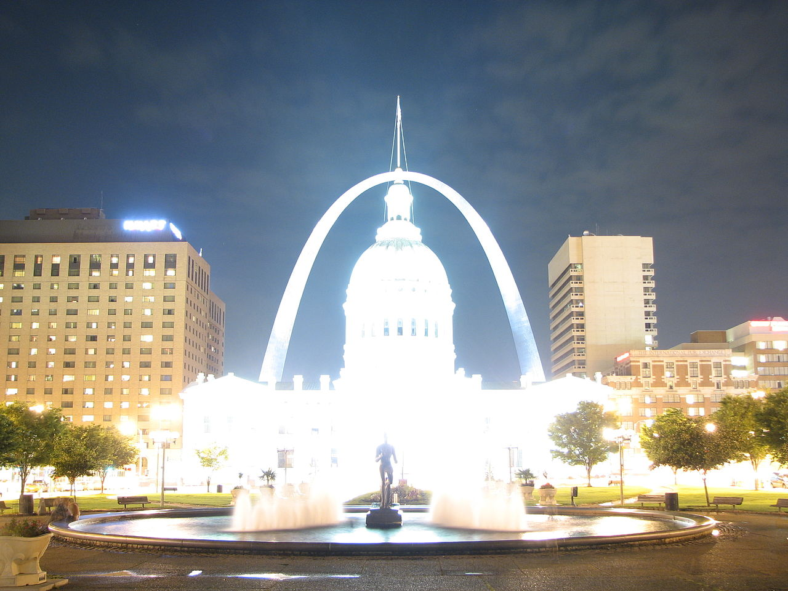
Exposure times: 17s, 3s, 1/25s, 1/4s.
The first step in creating an HDR image was to estimate the radiance map of the scene. Using the least-squares algorithm described by Debevec, I computed the camera response function g and the unknown log radiance values ln(E) for each pixel. This approach combines the pixel values across all images, weighted by their exposure times and a triangle weighting function to avoid saturation effects.
Below is an example of the computed response function for each color channel:
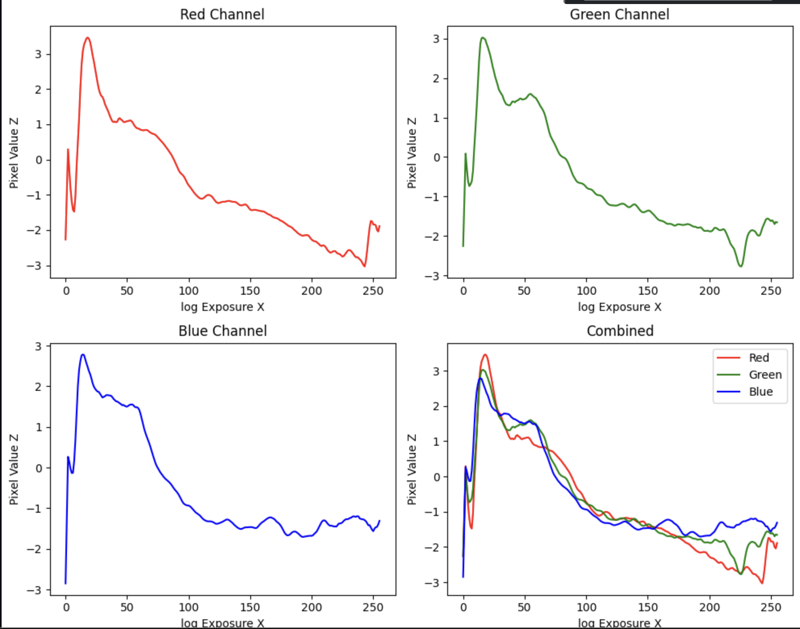
The next step was constructing the radiance map, which represents the true intensity of light at each pixel in the scene. Using the Debevec and Malik algorithm, I computed the camera response function and the log radiance values . The algorithm combines pixel values from all images, weighting them based on their proximity to the midpoint of the intensity range (to avoid saturation). This weighted least-squares approach ensures the radiance map is robust and accurately represents the light intensities of the scene.
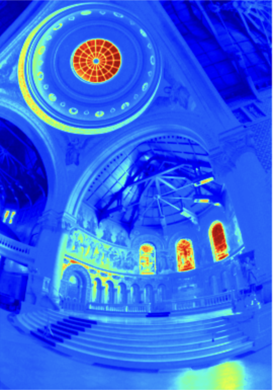
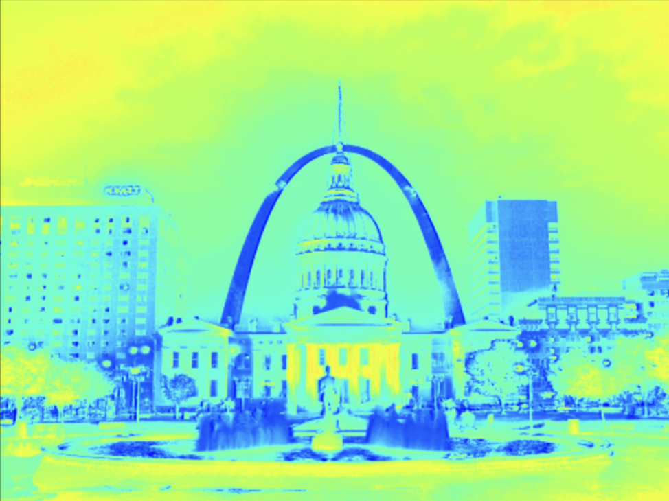
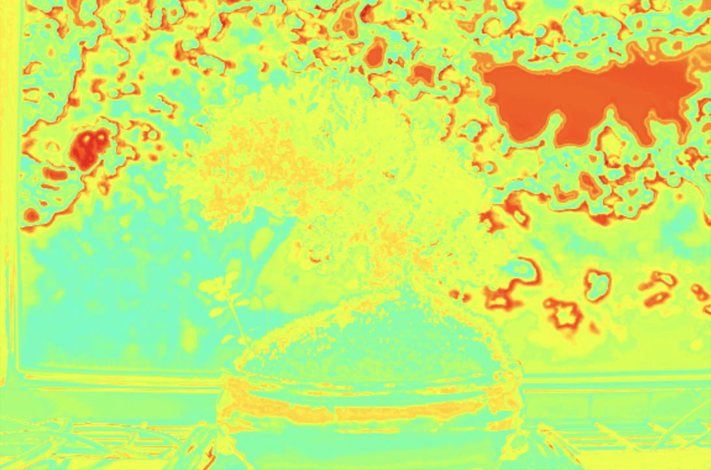
After constructing the radiance map, the next challenge was tone mapping—compressing the wide dynamic range of the HDR image into a range that can be displayed on standard monitors. Tone mapping preserves as much detail as possible from both dark and bright regions, ensuring the final image remains visually balanced and realistic. I implemented and compared several tone mapping algorithms:
The Durand operator balances brightness and preserving detail in both dark and bright regions. Below are the base and detail layers extracted using the bilateral filter:
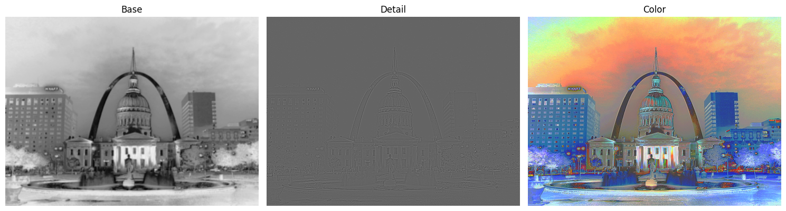
Here are the results for different tone mapping operators:
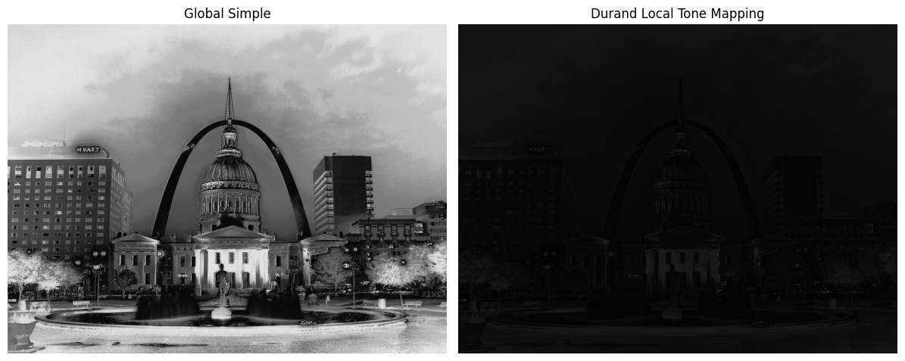
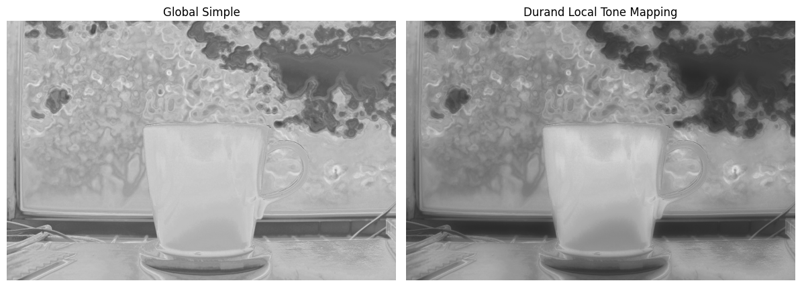
Finally, here are the HDR results for various scenes using both the Global Simple and Durand tone mapping methods:
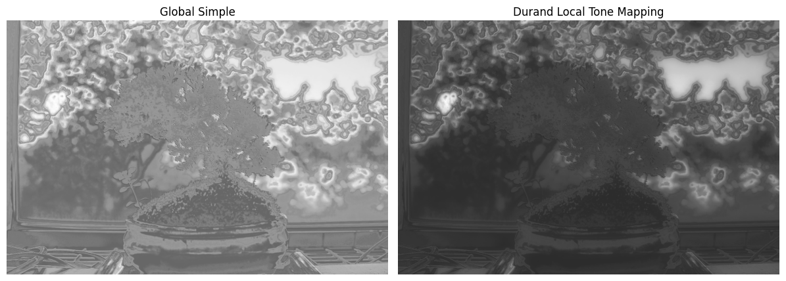
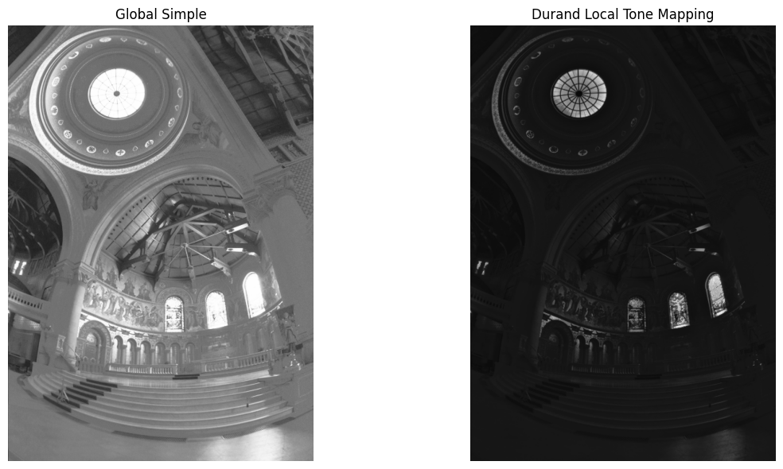
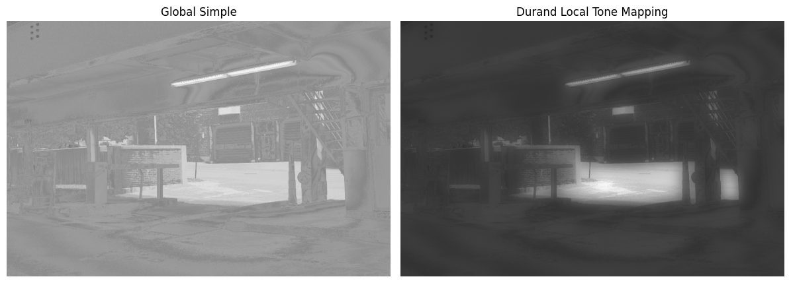
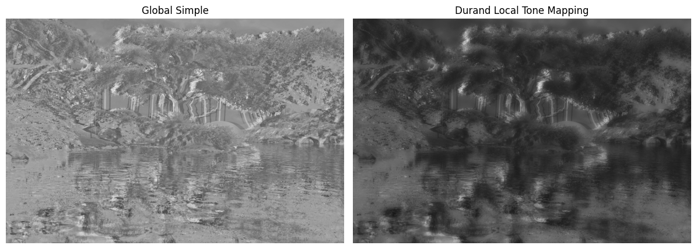
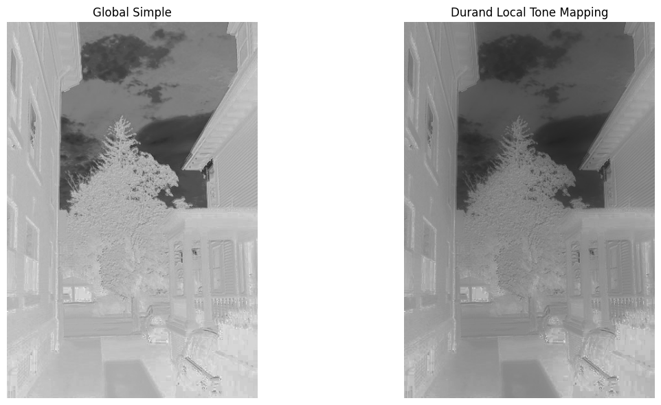
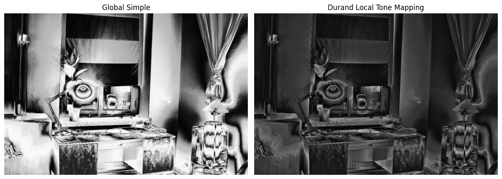
The Durand operator and Global simple operator produced similar results. In both cases I could not figure out how to preserve the color and unfortunately have grayscale images for both outputs.